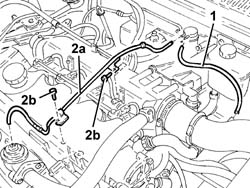
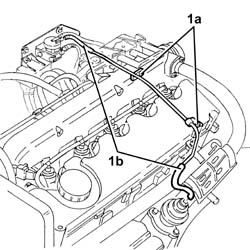

1080C58 e.g.r. system vacuum pipe - arrange
- Path
- Procedures > 10 ENGINE > 1080 EXHAUST EMISSION CONTROL SYSTEM > 1080C exhaust gas recirculation system (e.g.r.) > 1080C58 e.g.r. system vacuum pipe - arrange
- Kind
- repair procedure (removal / refitting; the operation number is the code)
- Applies to
- engines: 1.9 JTD 8v , 2.4 JTD 10v; all production periods
- Interactive page
- https://sloeber94.github.io/elrnDB-a156/en/#/3237843
Applies to: engines: 1.9 JTD 8v ; all production periods
 Removing
Removing
 Refitting
Refitting1016A10 sound-proofing cover - r + r .
1. Disconnect the remova the E.G.R. system vacuum pipe between the intermediate connector and the E.G.R. system solenoid valve.
2. Disconnect the E.G.R. system vacuum pipe between the solenoid valve and the E.G.R. valve (2a) and remove it after having undone the bolts (2b).

Applies to: engines: 1.9 JTD 8v ; all production periods
Refitting
RemovingPlace the E.G.R. system vacuum pipe from the solenoid valve to the E.G.R. valve back in its housing and connect it using the bolts.
Place the E.G.R. system vacuum pipe between the intermediate connector and the E.G.R. system solenoid valve back in its housing and connect it.
Applies to: engines: 2.4 JTD 10v; all production periods
Removing
RefittingProceed with the removal 1016A10 sound-proofing cover - r + r .
1. Undo the bolts (1a), then disconnect and remove the EGR system vacuum pipe (1b).

Applies to: engines: 2.4 JTD 10v; all production periods
Refitting
RemovingPlace the E.G.R. valve vacuum pipe back in its housing, connect it and secure with the bolts.
Proceed with the refitting 1016A10 sound-proofing cover - r + r .